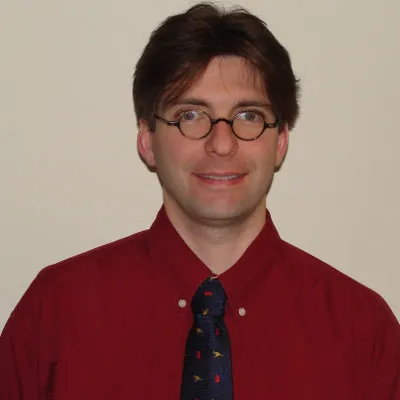
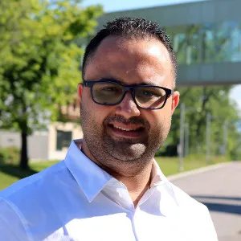
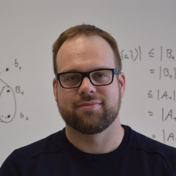

Staff
Four professors are members of LIF and currently supervise a dozen students of all cycles. In total, since its inception, more than 60 students have worked at LIF, coming from places as diverse as Québec, France, China and Africa.
Faculty
 Sylvain Hallé, Ph.D. is the Canada Research Chair on Software Specification, Testing and Verification and Full Professor in the Department of Computer Science and Mathematics at UQAC, where he has been working since 2010. He obtained a Ph.D. in Computer Science from Université du Québec à Montréal (UQAM) and has worked as a postdoctoral research fellow at University of California, Santa Barbara, from 2008 to 2010. Pr. Hallé has received numerous international awards for his research on software testing and verification, and earned two Governor General of Canada's Academic Medals, in 1997 and 2009. Notably, he is the author and leader of the BeepBeep project, a lightweight event stream processing library used for runtime verification and testing, and of Cornipickle, a test oracle for user interfaces in web applications.
 Fehmi Jaafar, Ph.D. is currently an Associate Professor at Université du Québec à Chicoutimi and an Affiliate Professor at Laval University and Concordia University. Previously, he was Researcher at the Computer Research Institute of Montreal, an Adjunct Professor at Concordia University of Edmonton, and a postdoctoral research fellow at Queen's University and Polytechnique Montreal. Dr. Fehmi Jaafar received his PhD from the Department of Computer Science at Université de Montréal, Canada. He is interested in cybersecurity in the Internet of Things, in the analysis and the improvement of the security and quality of software systems, and in the application of machine learning techniques in cybersecurity. His researches have been published in top venues in computer sciences, including the Journal of Empirical Software Engineering (EMSE) and the Journal of Software: Evolution and Process (JSEP). He established externally funded research programs in collaboration with Defence Canada, Safety Canada, NSERC, MITACS, industrial partners, and foreign universities.
 Hugo Tremblay, Ph.D. is an Assistant professor in the Department of Computer Science and Mathematics at UQAC since 2022. He obtained is PhD in mathematics from UQÀM in 2017 before working as a postdoctoral research fellow at University of Ottawa, then as a Substitute professor at UQAC. His research work focuses on digital geometry, graph theory and algorithmics.
Sébastien Gaboury, Ph.D. is an Associate Professor in the Department of Computer Science and Mathematics at UQAC since 2012. He has authored close to a hundred research papers in international journals and conferences. Pr. Gaboury was the recipient of the Governor General of Canada's Academic Medal in 2013 for his doctoral work in fundamental mathematics.
Students
The contribution of our graduate and undergraduate students is crucial. All of LIF's research projects also have an academic component that benefits to all the students that contribute to them.
Ph.D. students
- Ricardo Ávila
- Sarika Machhindra Kadam
- Eduardo Mendes de Oliveira
- Mithunvenkatesh Mohankumar
- Marcela Santos
Master's students
- Alexandre Lambert
- Amadou Kabiné Traore
Undergraduate students
- Véronique Du Paul, NSERC undergraduate student research award
- Sophie Lalancette, NSERC undergraduate student research award
- Baptiste Wetterwald
- Alexander Yanovskyy
LIF alumni
Thanks to all our former students how have worked at LIF since its creation in 2012. (Please contact us if your status has changed or if we forgot you!)
Ph.D. students
- Oussama Beroual
- Quentin Betti
- Edmond La Chance
- Bianca Minetto Napoleão
- Éric Lunaud Ngoupé
- Jalves Nicácio
- Asma Razgallah
- Massiva Roudjane
- Rania Taleb
Master's students
- Mewena Awesso, internship
- Alexis Bédard
- Souhail Ben Ali, internship at Ubisoft
- Mohamed Racem Boussaha
- Jérôme Calvar
- Tom Canac
- Xavier Chamberland-Thibeault
- Guillaume Demarty
- Imen Doudech
- Ayyoub Gannoun, internship
- Francis Guérin
- Demétrio Guilard
- Bassam Khorchani
- Amadou Makhtar Tall
- Fabien Maronnaud
- Chafik Meniar
- Matthieu Michenot
- Léo Monteiro
- Aouatef Mrad
- Mohamed Yliès Rahim
- Julien Roux, internship
- Lei Shi
- Maxime Soucy-Boivin (now works for Gouvernement du Québec)
- Jérémy Spieldenner, internship at Eckinox Média
- Youssef Achkar Touzani, internship
- Raphaël Tremblay-Lessard (now works for Cégep de Chicoutimi)
- Jason Vallet, internship
- Simon Varvaressos, recipient of an excellence scholarship from Fonds de recherche Québec
- Benjamin Vignau
- Kun Xie
Undergraduate students
- Valentin Bailleul
- Helloïs Barbosa
- Gabrielle Bastien
- Antoine Berthier
- Nicolas Bergeron
- Alexis Colin
- Hans Darmstadt-Bélanger, NSERC undergraduate student research award
- Sarah Desmeules, NSERC undergraduate student research award
- Vincent Dufour, NSERC undergraduate student research award
- Vincent Gagnon, NSERC undergraduate student research award
- Quentin Gouy
- Corentin Kirscher
- Killian Lachaux
- Raphaël Laguerre, exchange with Télécom Saint-Étienne (France)
- Alexandre Larouche
- Kim Lavoie, NSERC undergraduate student research award; now works for Cégep de Chicoutimi
- Gabriel Le Breton, co-founder of Totema Studio
- Daehli Nadeau-Otis
- Gaël Perrot
- Marc-Antoine Plourde, NSERC undergraduate student research award
- Martin Renaud
- Dominic Vaillancourt, now works for Behaviour Interactive
- Guillaume Vassal, exchange with Télécom Saint-Étienne (France)